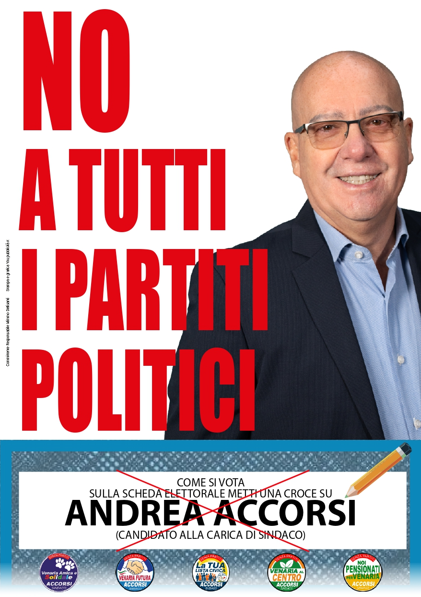
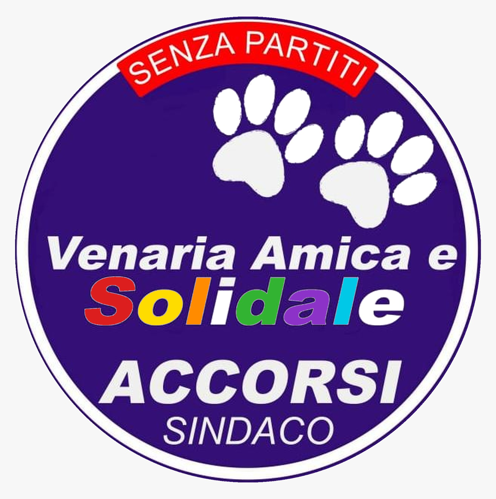

Siamo l'alternativa civica, coraggiosa e trasparente che mette al centro il bene comune e il futuro delle nuove generazioni.
Scopri il ProgettoIl nostro progetto nasce da un'idea chiara: rimettere Venaria Reale nelle mani dei venariesi. Senza influenze, senza logiche di partito, con trasparenza e competenza.
NO a tutti i partiti,
SI a tutti i venariesi.

Un progetto civico nato dall'ascolto del territorio, per restituire dignità e futuro a Venaria Reale attraverso tre pilastri fondamentali.
Sostegno concreto alle attività di vicinato e alle botteghe storiche. Vogliamo una Venaria che torni a essere un centro commerciale naturale, vivo e attrattivo per i residenti e i turisti.
Più decoro urbano e controllo del territorio. Ogni quartiere, dal centro alle periferie, deve essere sicuro, illuminato e curato, garantendo la qualità della vita che i venariesi meritano.
Nessuno deve restare solo. Potenzieremo i servizi per gli anziani e le fasce fragili, creando spazi di aggregazione e assistenza domiciliare efficiente e umana.
Cinque anime, un unico progetto per Venaria Reale.

Venaria Amica e SolidaleEntra a far parte del gruppo di lavoro. La tua idea può cambiare la città.
Email:coalizionecivicavenariese@gmail.com
Venaria Reale (TO)